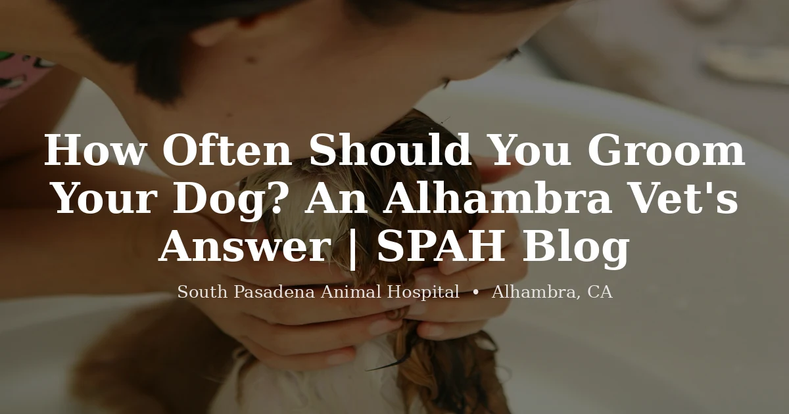

July 13, 2026 · 7 min read
How Often Should You Groom Your Dog? An Alhambra Vet's Answer

Ask the internet how often to groom a dog and you'll get "every four to eight weeks" from roughly everyone. It's not wrong. It's just an average of a lot of very different dogs, and when an owner takes it literally, it goes sideways in both directions — a shih tzu who genuinely needs it every five weeks gets stretched to three months, and a beagle who needs almost nothing gets booked on a schedule he doesn't need.
So when someone asks us this, we ask something back first: what does your dog's coat actually do? Everything follows from that.
Start with the coat, not the calendar
Broadly, dogs fall into three camps, and they aren't remotely on the same schedule. Dogs whose hair keeps growing — poodles, doodles, shih tzus, bichons, maltese, most of the fluffy mixes we see all over Alhambra — genuinely do live on that four-to-eight week cycle, because their coat never stops. Skip it and it doesn't just get long. It tangles into itself and mats.
Double-coated dogs are a different animal entirely. Huskies, shepherds, corgis, goldens. That coat isn't growing indefinitely; it's cycling, blowing out undercoat in enormous drifts a couple of times a year. These dogs don't need haircuts. They need brushing and de-shedding, and the schedule is driven by shedding season more than by any number.
And then the short-coated dogs — beagles, pit mixes, chihuahuas, frenchies. Honestly? They need the least. An occasional bath, nails kept short, ears kept clean. We've had owners apologize for not having their pit bull groomed in a year and the dog is in perfect shape.
What Southern California does to the schedule
The generic advice also ignores where the dog lives, and that matters more here than people expect. Our dogs are outside year-round. That means foxtails from late spring through summer, and if you walk the trails around Eaton Canyon or the hills above Altadena, foxtails buried in a long coat are a genuine problem — they migrate, they don't come out on their own, and we dig them out of paws and ears every single summer. A dog with a long coat who hikes local trails benefits from being kept shorter through foxtail season, full stop.
Heat plays in too, though not the way most owners assume. The instinct in a 100-degree Alhambra August is to shave the husky down. Please don't. That double coat is insulation against heat as much as cold, and what's actually cooking your dog is the dead undercoat trapped in there. Get that stripped out properly and the coat does its job. Shave it and you can end up with sunburn and a coat that grows back wrong.
The mistake we see most
Owners wait for the coat to look bad. By then the mats are already against the skin.
This is the thing we'd most like people to understand about grooming, and it's why we push a rhythm rather than a reaction. Matting doesn't start where you can see it. It starts at the base of the coat, tightens slowly, and pulls on the skin — and underneath, moisture and dirt sit against the skin and it gets sore, sometimes infected. The dog usually doesn't complain. Dogs are terrible at complaining about slow pain. What we see instead is a dog who suddenly doesn't want to be touched in a certain spot, or who's been getting quietly grumpier about being brushed for a month.
Run your hands through the coat once a week, close to the skin, not just over the top. If your fingers snag, if you feel a tight clump, if there's a smell that a bath doesn't fix, you're behind. That five-second check is worth more than any schedule we could write down for you.
Nails are the part everyone forgets
Grooming conversations always drift to haircuts, and meanwhile the nails are the thing quietly causing damage. Every three to six weeks for most dogs, but forget the number — if you can hear clicking on a hard floor, or you can see the nails touching the ground while the dog just stands there, they're too long.
Long nails push the toes into an unnatural position and change how a dog stands. That travels up. In an older dog who's already arthritic, we've seen a nail trim make a visible difference in how comfortably they move within a week. It's the least glamorous thing on the grooming menu and probably the highest-value.
When grooming stops being cosmetic
Some of this crosses over into our territory rather than a groomer's. A dog whose skin is red, flaky, greasy, or itchy underneath the coat has something going on that a bath will not fix — allergies are enormously common in Southern California dogs and often show up first as a coat that just won't stay nice. If your dog's coat quality has changed, or they're chewing at themselves, that's worth a look from us and not just a standing groom appointment.
Same goes for a dog who's become genuinely fearful about grooming. That's not stubbornness. It's usually either pain somewhere or a bad experience that stuck, and both are things we can help with rather than something to muscle through.
If you're not sure where your dog lands, ask us. We're at 3116 W Main St in Alhambra, and it takes about thirty seconds to run our hands through a coat and tell you honestly whether you're on the right rhythm — or whether you're doing more than your dog needs. Get in touch and we'll talk it through.
Questions we hear often
How often should I groom my dog?
It depends far more on the coat than on the calendar. Dogs with hair that keeps growing — poodles, doodles, shih tzus, bichons — generally need a full groom every four to eight weeks because their coat never stops. Double-coated dogs like huskies and shepherds don't need haircuts at all, but benefit from regular baths and de-shedding. Short-coated dogs like beagles and pit bulls often need little more than the occasional bath and regular nail trims.
Can you groom a dog too often?
Bathing too frequently can strip the skin's natural oils and leave a dog itchy and flaky — that's the most common way owners overdo it. Brushing is very hard to overdo. Haircuts are limited by how fast the coat grows, so over-cutting is rarely the issue. If your dog's skin looks dry or irritated after grooming, tell us; the products or the frequency may need adjusting.
How often do dogs need their nails trimmed?
Most dogs need nails trimmed every three to six weeks, but the real test is simpler: if you can hear clicking on a hard floor, or see the nails touching the ground when your dog stands still, they're too long. Overgrown nails change how a dog stands and walks, and over time that strains the joints.
Should I shave my double-coated dog in the summer?
Generally no. A double coat insulates against heat as well as cold, and shaving it can interfere with that and expose skin to sunburn — the coat may also grow back with a different texture. The better approach for a hot summer is thorough de-shedding to remove the dead undercoat, which is what actually traps heat. If your dog is struggling in the heat, talk to us rather than reaching for the clippers.
How do I know if my dog is overdue for grooming?
Run your hands through the coat rather than just looking at it. If your fingers snag, if you feel tight clumps close to the skin, if there's a smell a bath doesn't fix, or if your dog flinches when you touch a spot, you're past due. Mats tighten against the skin and become painful, and by the time they're visible from across the room they've been forming for weeks. Ask us and we'll take a look.